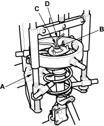
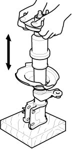

Disassembly/Inspection
- Compress the damper spring with the commercially available strut compressor (A) according to the manufacturer's instructions, then remove the self-locking nut (B) while holding the damper shaft (C) with a hex wrench (D). Do not compress the spring more than necessary to remove the nut.

- Release the pressure from the strut spring compressor, then disassemble the damper as shown in the Exploded View.
- Reassemble all the parts, except for the upper spring seat, mounting cushion and spring.
- Compress the damper assembly by hand and check for smooth operation through a full stroke, both compression and extension. The damper should extend smoothly and constantly when compression is released. If it does not, the gas is leaking and the damper should be replaced.

- Check for oil leaks, abnormal noises and binding during these tests.